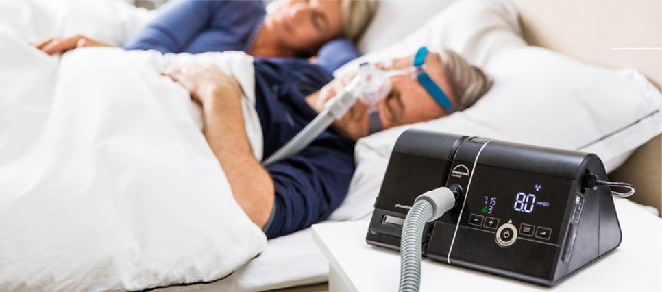
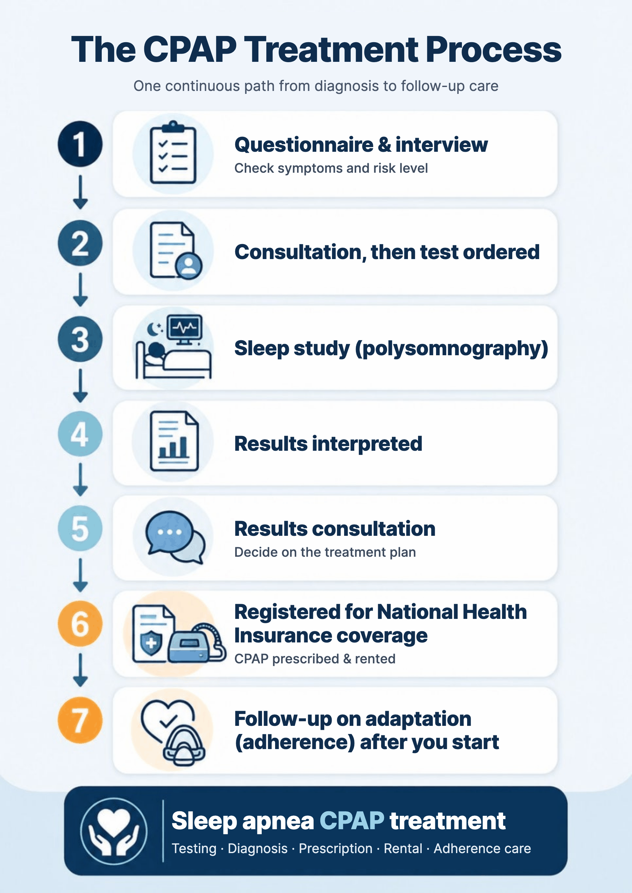

If a sleep study shows moderate or worse sleep apnea — or mild sleep apnea with daytime sleepiness, high blood pressure or similar factors — you may be advised to start CPAP. But many people are unsure: What exactly is a CPAP machine? Why are there so many types? How does health insurance work? Do I buy it or rent it? This article covers how CPAP works, the types, pressure titration, Korean National Health Insurance (NHIS) rental and co-payments, and the adherence rules. (Sleep apnea and sleep studies themselves are covered in a separate article.)
In this article 11 sections · 8 min read
- What is CPAP — and how is it different from a ventilator?
- When is CPAP recommended?
- Types of PAP machines
- Pressure titration: finding the right pressure for you
- From sleep study to CPAP: the process
- How does NHIS CPAP rental work?
- How much is the co-payment?
- The adherence rule: 90 days, 30 days, 21 days, 4 hours
- If CPAP is hard to get used to at first
- Frequently asked questions
- Considering CPAP?
What is CPAP — and how is it different from a ventilator?
A CPAP (continuous positive airway pressure) machine sends steady air pressure through a mask over the nose, or the nose and mouth, to hold open the airway that narrows during sleep. A common misunderstanding: CPAP is not a ventilator. It doesn't breathe for you; it uses air pressure to splint the airway open so it doesn't collapse. That's why it is the standard first-line non-surgical treatment for obstructive sleep apnea.

When is CPAP recommended?
- Moderate to severe obstructive sleep apnea
- Mild sleep apnea with daytime sleepiness, high blood pressure or cardiovascular risk
Obesity and a large neck circumference increase the risk of OSA and may prompt testing; they are not, by themselves, reasons to start CPAP. PAP treatment is considered after OSA has been objectively diagnosed.
NHIS coverage criteria are more specific. For adults, CPAP is covered when an in-lab sleep study (Level I) shows one of the following:
- AHI (apnea–hypopnea index) of 15 or more
- AHI of 10 or more with at least one of: insomnia, daytime sleepiness, cognitive impairment or mood disorder
- AHI of 5 or more with high blood pressure, ischemic heart disease or a history of stroke — or oxygen saturation below 85% during sleep
So the same AHI may or may not be covered depending on accompanying symptoms and conditions. Whether you qualify is decided from your test results together with these factors.
Types of PAP machines
| Type | Pressure | Features |
|---|---|---|
| CPAP (fixed) | Same pressure when breathing in and out | The basic type; a single fixed pressure supports the airway. |
| APAP (auto) | Adjusts pressure automatically to your breathing pattern | Often used when starting out or when pressure needs vary a lot. |
| BiPAP (bilevel) | Higher pressure breathing in than breathing out | Bilevel PAP may be considered for selected patients, but NHIS reimbursement has separate clinical and documentation criteria. Discomfort alone does not establish coverage; a titration report and, where relevant, CO₂ results are required. |
| EPR / C-Flex (exhalation relief) | Exhalation-relief features reduce pressure during exhalation to improve comfort. The amount and timing of relief depend on the device and algorithm; C-Flex levels 1–3 are not equivalent to a fixed 1–3 cmH₂O pressure reduction. | A comfort feature, not a separate type; helps people who find the pressure hard to get used to. |
Adding a heated humidifier reduces nasal and mouth dryness and helps with getting used to the machine.
Pressure titration: finding the right pressure for you
How much the airway collapses during sleep, and how much pressure is needed, differs from person to person. Some people are worse on their back, some in REM sleep; some have large oxygen drops, others have a lot of mask leak.
A titration study observes real sleep while you wear CPAP to check whether apneas are controlled, oxygen levels are stable, and the pressure is neither too low nor too high. Too little pressure leaves residual apneas; unnecessarily high pressure can cause a smothering feeling, dry mouth, swallowing air and mask leaks, making it hard to adapt. Just as glasses need the right prescription, CPAP needs the right pressure to be comfortable for the long term.
Some people can start on an auto (APAP) machine. But titration helps set the direction of treatment when a fixed CPAP pressure has to be set, a high pressure is expected, early adaptation is difficult, residual apnea is suspected, or BiPAP is being considered. It's not mandatory for everyone, but it is less "one more test" and more a personalized set-up so you can use CPAP comfortably for years.
From sleep study to CPAP: the process

- Questionnaire and history to assess symptoms and risk
- Consultation and test order
- Sleep study
- Scoring and interpretation
- Results consultation and treatment decision
- Registration with NHIS as an eligible patient; CPAP prescription and rental
- Follow-up and adherence management
How does NHIS CPAP rental work?
CPAP is not billed like ordinary clinic fees; it is supported as an NHIS "care expense" (요양비) benefit. So the roles are split between the clinic and an NHIS-registered supplier.
The clinic diagnoses sleep apnea with a sleep study, and the ENT specialist prescribes CPAP. If needed, a titration study determines your pressure. Afterwards, the clinic reviews your usage data to assess adherence and renews the prescription. Medical decisions — diagnosis, prescription and pressure — are made at the clinic.
The NHIS-registered supplier rents you the machine based on the clinic's prescription and a standard contract, supplies masks, and shows you how to wear and use the equipment. The prescribed settings, such as pressure, are applied as the clinic set them; the supplier does not change them on its own.
After registering with NHIS as an eligible patient and going through this process, you don't buy the machine outright — you rent it, and part of the rental cost is reimbursed.
How much is the co-payment?
For general NHIS subscribers, NHIS covers about 80% of the standard amount, so the co-payment is about 20%. During the adherence assessment period (the first 90 days), NHIS covers about 50%, so the co-payment is higher. Converted into approximate monthly amounts (based on NHIS standard amounts as of June 2026):
| Device | After passing adherence (≈20% co-pay) | During adherence period (≈50% co-pay) |
|---|---|---|
| CPAP (fixed) | ≈ ₩15,200 / month | ≈ ₩38,000 / month |
| APAP (auto) | ≈ ₩17,800 / month | ≈ ₩44,500 / month |
| BiPAP (bilevel) | ≈ ₩25,200 / month | ≈ ₩63,000 / month |
| Mask | One per year covered · co-pay ≈ ₩19,000 | |
Based on NHIS standard amounts as of June 2026. For people formally eligible for the near-poor copayment reduction program, NHIS generally covers 100% within the applicable ceiling after the adherence period, but 80% of eligible device rental costs during that period. Charges above the ceiling may remain payable. Medical Aid is a separate scheme; confirm its rules with your local authority. Actual amounts vary with insurance status, device type, supplier and policy changes — please confirm at your consultation, with the supplier or with NHIS.
Note for international patients: These benefits apply only if your NHIS eligibility is active and you meet the specific benefit criteria. Foreign employees at covered workplaces may be enrolled through employment; many other eligible foreign residents enter the resident scheme after six months. Timing and exceptions depend on your status, so please confirm your current eligibility with NHIS. If you are not enrolled (for example, under SOFA status or with private/overseas insurance only), self-pay applies; please ask about receipts and medical documents for your insurer.
The adherence rule: 90 days, 30 days, 21 days, 4 hours
Many people give up on CPAP early, so ongoing coverage depends on meeting a usage standard: within 90 days of the first prescription, use CPAP for at least 4 hours a night (3 hours for children 12 and under) on at least 21 days within a 30-day consecutive period. Passing this standard is required to keep receiving NHIS support, so the first few months of adapting are crucial.
After the initial adherence assessment, the same 21-days-in-30 test is not repeated routinely. Continued reimbursement also requires an average of at least 2 hours of use per day during the preceding prescription period, except for children aged 12 or younger, as well as a valid renewed prescription. These insurance minimums are not the recommended duration of treatment: use PAP throughout sleep.
If CPAP is hard to get used to at first
CPAP works properly when used consistently every night. Early discomforts — dry mouth, a blocked nose, mask marks, the unfamiliar feeling of air pressure — can usually be improved by changing the mask type, using a humidifier, or adjusting pressure and comfort settings. Common side effects and how to manage them will be covered in a future article.
Frequently asked questions
Do I buy or rent the CPAP machine?
With NHIS coverage, you usually rent it from an NHIS-registered supplier, and part of the rental and mask costs is reimbursed.
Does everyone get NHIS coverage for CPAP?
No. You need to meet the sleep study and symptom/condition criteria. Adults may qualify with AHI ≥15; AHI ≥10 plus insomnia, daytime sleepiness, cognitive impairment or a mood disorder; or AHI ≥5 plus hypertension, ischemic heart disease, a history of stroke, or oxygen saturation below 85%, subject to NHIS registration and the applicable documentation requirements.
What is the adherence standard?
Within 90 days of the first prescription, at least 4 hours of use on 21 or more days within a 30-day consecutive period.
Do I have to have a titration study?
Not everyone needs one, but it helps set up CPAP to fit you from the start. You can begin with APAP, but a titration study is more accurate for checking position changes, REM sleep, oxygen levels, mask leak and residual apnea during real sleep. It is particularly recommended when a fixed CPAP pressure needs to be set, high pressure is expected, adaptation is difficult, or BiPAP is being considered.
Will I feel better right away with CPAP?
Snoring, apneas and daytime sleepiness can improve quickly, but you may need time to adjust to the mask or dry mouth. Adherence support in the first 1–3 months is important.
Considering CPAP?
If you're thinking about CPAP or a sleep apnea evaluation, the first step is to confirm your severity and NHIS eligibility from sleep study results. Success with CPAP depends more on early adaptation and adherence than on which machine you choose.
This article is an English adaptation of a Korean post by Dr. Jungho Oh. It is general health information, not a diagnosis or treatment plan for any individual. Results and suitability of any test or treatment differ from person to person — please consult a doctor about your own situation.